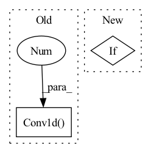

Pattern ID :1341
Before Change
conv_out_channel = (2 + 3 + self.num_dir_bins * 2 +
self.num_sizes * 4 + num_classes)
self.conv_pred.add_module("conv_out",
nn.Conv1d( prev_channel, conv_out_channel, 1 ) )
def init_weights(self):
Initialize weights of VoteHead.After Change
self.size_res_loss = build_loss(size_res_loss)
if size_class_loss is not None:
self.size_class_loss = build_loss(size_class_loss)
if semantic_loss is not None:
self.semantic_loss = build_loss(semantic_loss)
self.bbox_coder = build_bbox_coder(bbox_coder)
self.num_sizes = self.bbox_coder.num_sizesIn pattern: SUPERPATTERN
Frequency: 3
Non-data size: 2
Instances Fragment ID: 3587894
Project Name: open-mmlab/mmdetection3d
Commit Name: 460f6b3bf2320ceddeba58054c122836af2e6872
Time: 2020-09-13
Author: zhoujiaming@sensetime.com
File Name: mmdet3d/models/dense_heads/vote_head.py
M Class Name: VoteHead
N Class Name: VoteHead
M Method Name: __init__(17)
N Method Name: __init__(17)
M Parent Class: nn.Module
N Parent Class: nn.Module
M File Name: mmdet3d/models/dense_heads/vote_head.py
N File Name: mmdet3d/models/dense_heads/vote_head.py
M Start Line: 68
M End Line: 105
N Start Line: 67
N End Line: 86
Before Change
self.to_k = nn.Sequential(
nn.Conv1d(dim, inner_dim, 1, bias = False),
nn.Conv1d( inner_dim, inner_dim, 3 , bias = False, groups = inner_dim)
)
self.to_v = nn.Sequential(
nn.Conv1d(dim, inner_dim, 1, bias = False),After Change
ds_convs = nn.ModuleList([])
for kernel_size in ds_conv_kernel_sizes:
if kernel_size == 0:
ds_convs.append(nn.Identity())
continue
ds_convs.append(CausalDepthwiseConv1d(inner_dim, kernel_size)) Fragment ID: 3587895
Project Name: lucidrains/tranception-pytorch
Commit Name: b2eaf893294394093839a66effb621645d54cd6c
Time: 2022-06-12
Author: lucidrains@gmail.com
File Name: tranception_pytorch/tranception_pytorch.py
M Class Name: CausalAttention
N Class Name: CausalAttention
M Method Name: __init__(1)
N Method Name: __init__(1)
M Parent Class: nn.Module
N Parent Class: nn.Module
M File Name: tranception_pytorch/tranception_pytorch.py
N File Name: tranception_pytorch/tranception_pytorch.py
M Start Line: 90
M End Line: 109
N Start Line: 99
N End Line: 127
Before Change
def __init__(self):
super().__init__()
self.conv_1 = nn.Conv1d(1 , 16, (3, 1))
self.conv_2 = nn.Conv2d(16, 32, (3, 1))
self.conv_3 = nn.Conv2d(32, 32, (3, 1))
self.conv_4 = nn.Conv2d(32, 64, (3, 1))
self.conv_5 = nn.Conv2d(64, 64, (3, 1))After Change
self.max = nn.AdaptiveMaxPool2d(4)
if position:
if learnable:
self.position_embedding = LearnablePositionalEncoding(dict_size=num_patches, num_pos_feats=projection_dim)
else:
self.position_embedding = PositionalEncoding(projection_dim) Fragment ID: 3587904
Project Name: kolaszko/haptic_transformer
Commit Name: 480c8a6c89740a357ff79f97d11b8fde6f6e09be
Time: 2021-05-05
Author: mikolaj.lysakowski.bk@gmail.com
File Name: models/signal_encoder.py
M Class Name: SignalEncoderConv
N Class Name: SignalEncoderConv
M Method Name: __init__(6)
N Method Name: __init__(1)
M Parent Class: nn.Module
N Parent Class: nn.Module
M File Name: models/signal_encoder.py
N File Name: models/signal_encoder.py
M Start Line: 7
M End Line: 14
N Start Line: 10
N End Line: 31